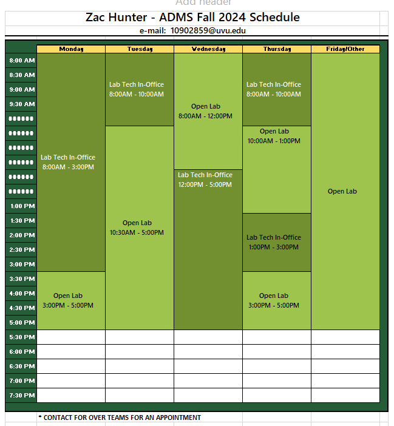
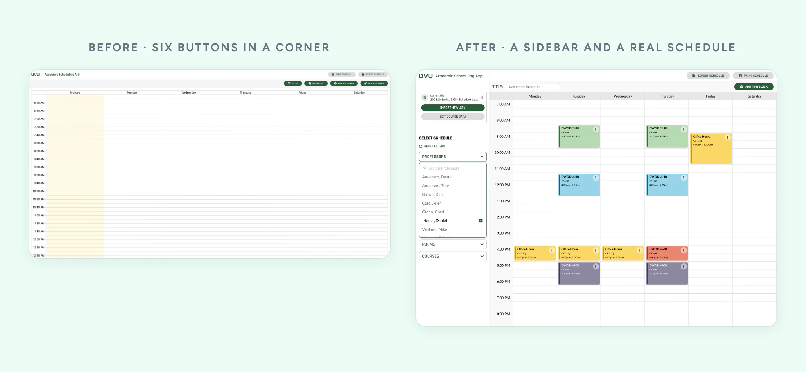
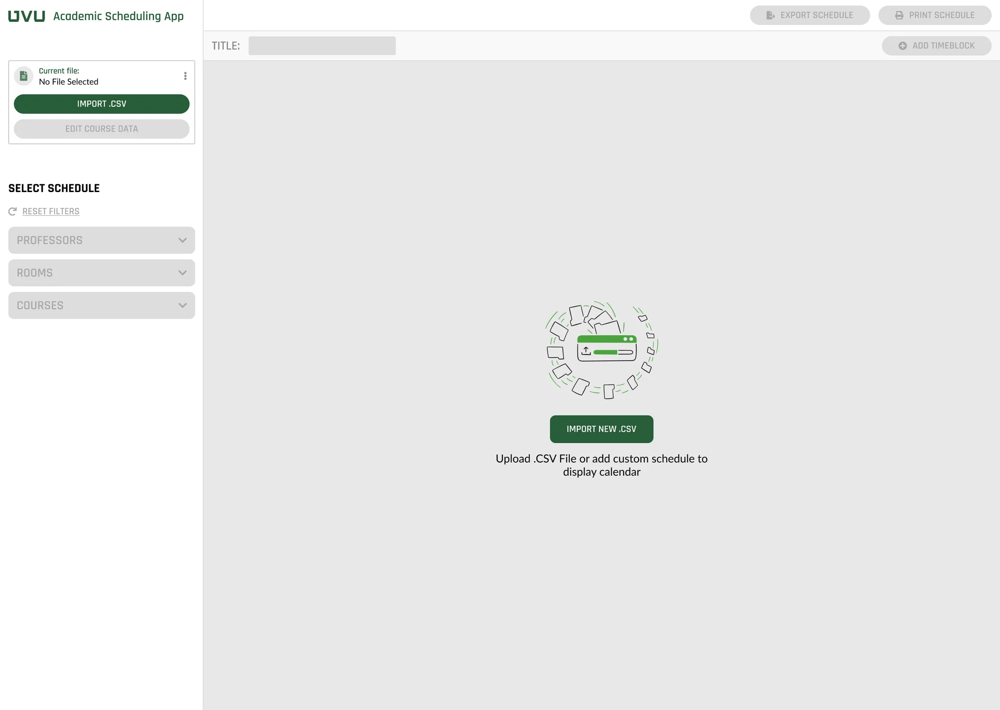
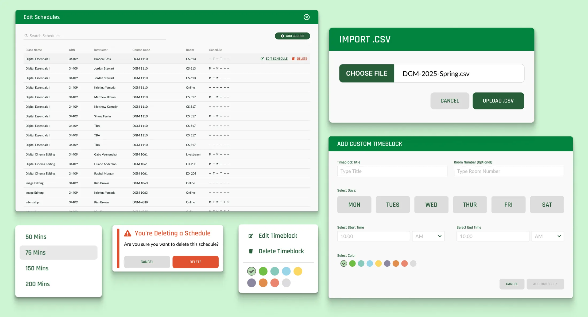

Six Buttons in a Corner
Redesigning UVU's class scheduling tool, measured before and after
Executive Summary
Every classroom and office door in UVU's digital media department has a printed schedule, and admins spent weeks building them. A tool already existed to speed that up, but it took me 15 minutes to figure out.
Instead of redesigning on a hunch, I measured it first, rebuilt it around the tasks that failed, and tested again. Success went from 71% to 94%, and time on task from 42 seconds to 11. Every task got done on the first try.
Role:
UX Designer and Project Manager
Duration:
3 months, 2024
Responsibilities:
Research, UX/UI design, prototyping, project management
The Job
A Schedule on Every Door
Each classroom and office in the department has a printed schedule on the door. Admins built them by hand, and it took weeks.

The department had started a tool to make that faster: load the course data, pick a professor or a room, and print the week.
The First Look
Fifteen Minutes to Figure Out
When I opened the tool, every action lived in six small buttons in the top corner, with labels that didn't say much. It took me about 15 minutes to work out how it worked.
That was a hunch, not a reason to spend the team's time on a redesign. So I wrote a research plan, walked my team and the decision makers through it, and tested before touching anything.
Measure First
A Baseline Before Anything Changed
The study
What I Asked
- How well does the current design work?
- Which features need the most help?
- What's missing?
What I Measured
- Success rate
- Time on task and attempts
- Satisfaction per task
How I Tested
- 7 guided scenarios
- 10 interview questions
Baseline, on the original tool
71%
Success Rate
42s
Avg. Time on Task
1.35
Avg. Attempts per Task
3.85 / 5
Avg. Satisfaction
Broken down by task, three did much worse than the rest. That's where the redesign started. People also asked for four things the tool didn't do yet.
The Redesign
From a Corner of Buttons to a Sidebar
The actions people needed most moved out of the corner and into a sidebar: load a file, then pick a professor, a room, or a course. Nothing buried, and fewer clicks to get to a schedule.

A Real Starting Point
Testing showed people were thrown off by landing on an empty calendar. Now the first screen tells you what to do: import your course file to get started.

Room for What People Asked For
New overlays cover the rest: importing a course file, adding a custom time block like office hours, editing schedules, and confirming before anything gets deleted.

Testing Again
Every Metric Moved
I ran the same scenarios on the redesign.
| Before | After | Change | |
|---|---|---|---|
| Success rate | 71% | 94% | +23 points |
| Avg. time on task | 42s | 11s | 31s faster |
| Avg. attempts per task | 1.35 | 1 | First try, every time |
| Avg. satisfaction | 3.85 / 5 | 4.74 / 5 | +0.89 |
People said it too:
I feel like I have a better grasp on what the frick this is.
This version is way better. It is easier to see information and I like the way the schedule populates.
This design has come a long way.
What I'd Keep
Measure before you redesign. The baseline is what got the team to say yes, and it's what made the after numbers mean something.